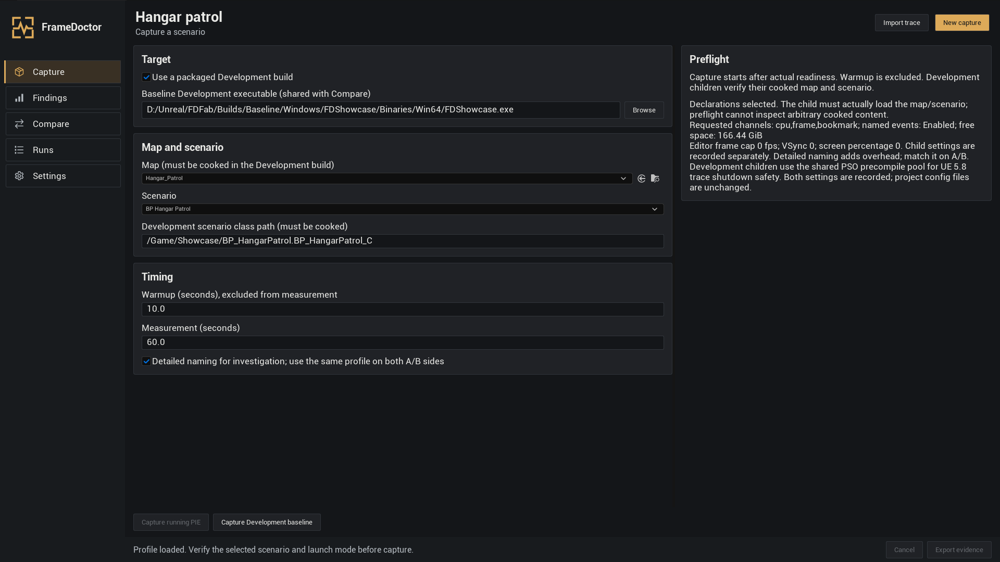
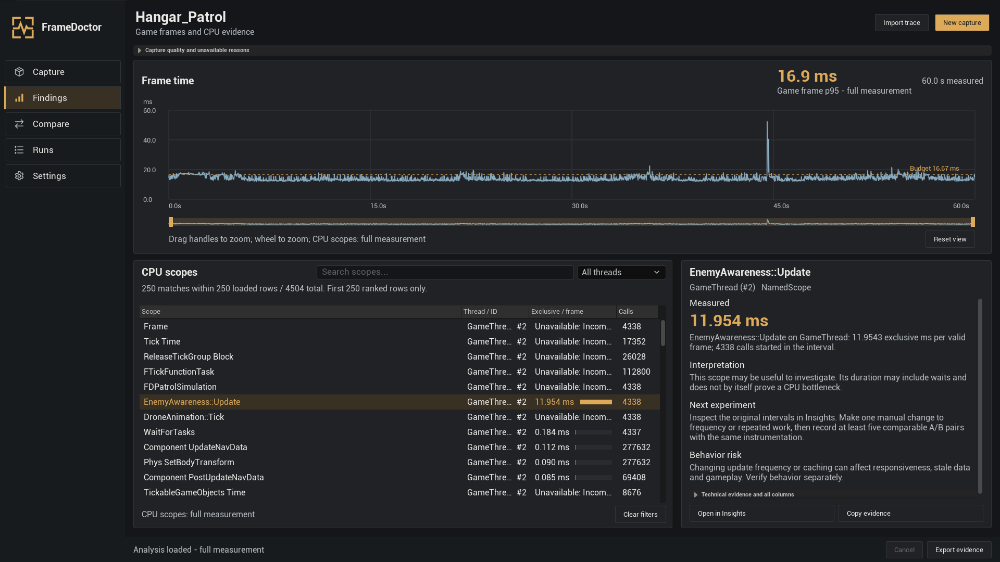
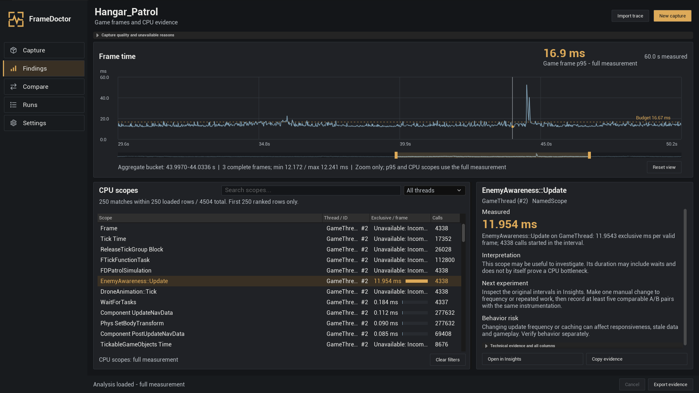
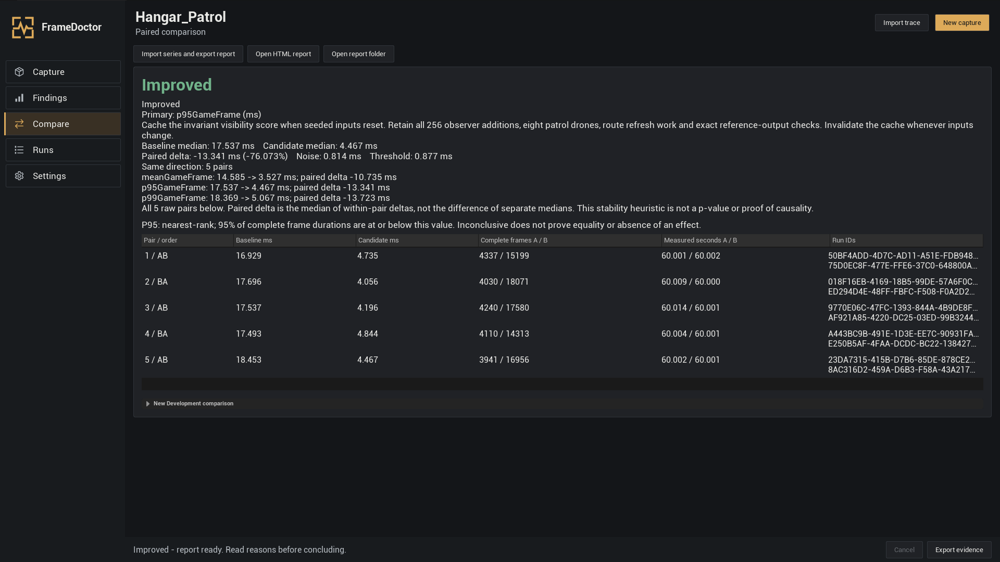
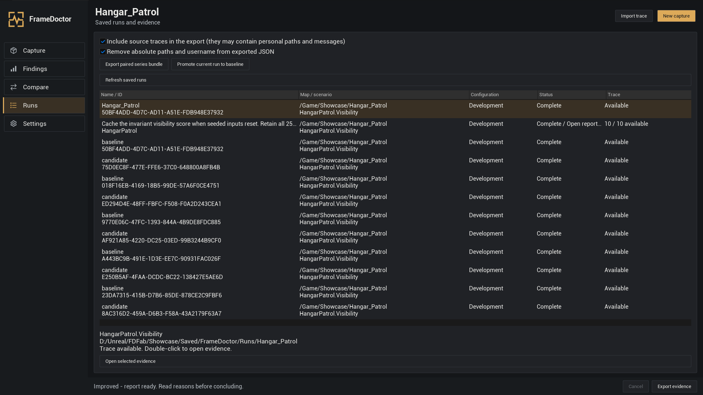
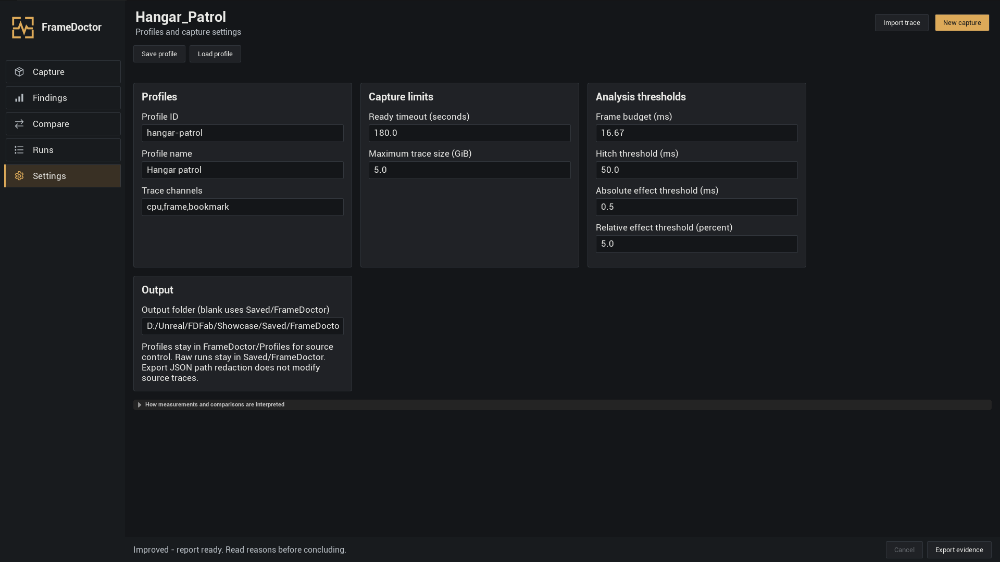

FrameDoctor 用户指南
记录场景中发生的事情，找出耗时的 CPU 工作，并检查手动修改是否有效。即使这是你的第一个 Unreal Engine 项目，也可以从这里开始。
- 记录场景
- 阅读验证数据
- 进行一项修改
- 比较运行结果
- 保存结果
帧就是游戏的一张画面。帧耗时是游戏生成下一帧所需的时间。耗时长的帧会让人感觉画面停顿或卡顿。FrameDoctor 会记录包含计时事件的跟踪文件，再将这些事件整理为图表和 CPU 作用域列表。
- Capture：记录正在运行的场景。
- Findings：阅读帧耗时，检查一项 CPU 工作。
- Compare：测量修改前后保留下来的两个 Development 构建。
- Runs：重新查看记录，导出验证数据。
- Settings：保存记录配置，选择阈值。
本指南已翻译，但文中提到的插件控件仍使用其英文名称。语言选择器切换的是本指南的语言。不熟悉的 Unreal 术语可在简明术语表中查阅。
安装并打开 FrameDoctor
FrameDoctor 支持 Windows 64 位上的 Unreal Engine 5.5、5.6、5.7 和 5.8。请选择与引擎版本匹配的插件包。
如果你从未打开过 Unreal
打开 Epic Games Launcher → Unreal Engine → Library，启动已安装的引擎。打开现有项目，或选择 Games → Blank → Blueprint，输入项目名称和文件夹，然后点击 Create。项目保存整个游戏；地图也称关卡，用于保存其中的一个场景。
从 Fab 安装
- 关闭 Unreal Editor。在启动器的 Fab Library 中找到 FrameDoctor，点击 Install to Engine。
- 选择项目使用的引擎版本，完成安装。
- 打开项目。进入 Edit → Plugins，搜索 FrameDoctor 并启用，按提示重启编辑器。
- 从编辑器主菜单打开 Tools → FrameDoctor。
安装提供的 ZIP 包
- 关闭编辑器，解压插件。
- 将其中单独的
FrameDoctor文件夹放入项目的Plugins文件夹。如果没有Plugins，请先创建。 - 检查下面的路径，避免多出一层
FrameDoctor/FrameDoctor嵌套文件夹。 - 打开项目，在 Edit → Plugins 中启用插件，重启后打开 Tools → FrameDoctor。
YourProject/
YourProject.uproject
Plugins/
FrameDoctor/
FrameDoctor.uplugin
Content/
Resources/
Source/Unreal 要求编译模块怎么办？
已编译的插件包还包含 Binaries。只有源码的包需要匹配的 C++ 编译工具链，即使游戏使用 Blueprint 也一样。安装 Visual Studio 2022，并选择 Game development with C++ 以及引擎所需的 Windows SDK。对于纯 Blueprint 项目，可通过 Tools → New C++ Class 添加一个最小类，创建 C++ 项目目标。关闭 Unreal，在 Visual Studio 中构建项目的 Development Editor / Win64 目标，然后重新打开项目。如果编译失败，请阅读第一条构建错误，并确认引擎与插件包版本匹配。
Epic 指南：启用和安装插件。
首次记录
先使用一个场景。情景用于告诉 FrameDoctor 场景何时准备就绪、何时可以开始测量。学习操作和调查场景时，可以选择使用单独示例项目中提供的情景。
步骤 1 之前：安装与引擎版本匹配的 FrameDoctor，建议安装到引擎。下载可选示例项目（UE 5.5–5.8，Win64）并解压。此项目仅包含内容资源，需要单独安装插件，默认关联 UE 5.5。使用 UE 5.6–5.8 时，请先右键点击 FrameDoctorExample.uproject，选择 Switch Unreal Engine version，再选择你的引擎。用该引擎打开 FrameDoctorExample.uproject，并确认已启用 FrameDoctor。
- 打开并保存地图。在示例项目中打开地图，或选择 File → New Level 创建地图，将其保存在项目的
Content文件夹中，然后使用 File → Save All。 - 开始 Play。点击编辑器工具栏中的三角形 Play 按钮。这就是 Play In Editor，简称 PIE。按 Shift + F1 释放鼠标，即可在游戏继续运行时使用编辑器。
- 选择 Capture。打开 Tools → FrameDoctor → Capture。保持 Use a packaged Development build 未勾选。PIE 记录的是已在 Play 中运行的地图；在 Map 字段选择另一张地图不会切换当前世界。
- 选择示例。在 Scenario 中搜索
BP_ExploratoryScenario。要找到该资产，可打开 Content Browser，或按 Ctrl + Space 打开 Content Drawer，然后查看 Content → FrameDoctorExample → Scenarios（/Game/FrameDoctorExample/Scenarios）。情景应在 FrameDoctor 中选择，不需要拖入关卡。 - 开始记录。保留 10 秒预热和 60 秒测量。阅读 Preflight，再点击 Capture running PIE。让 Play 继续运行，执行你想调查的操作。预热不计入测量结果。
- 阅读 Findings。记录完成后，如果尚未选中 Findings，请打开它。先阅读 Capture quality and unavailable reasons，再选择一个 CPU 作用域查看其验证数据。
请让游戏一直运行到记录结束。Esc 或编辑器的 Stop 按钮可能结束 PIE，导致记录中断。如需取消 FrameDoctor 当前的任务，请使用其中的 Cancel。
选择记录内容
Capture 有两种记录目标。未勾选 Use a packaged Development build 时，记录当前 PIE 世界；勾选后，FrameDoctor 会单独启动打包后的游戏。需要可复现的修改前后测量时，请使用打包后的游戏。
| 控件 | 使用方法 |
|---|---|
| Baseline Development executable | 使用 Browse 选择保留下来的构建 A。此路径与 Compare 共用。 |
| Map 和 Scenario | 选择情景类。对于 Development，请提供已烘焙的地图和情景类路径。 |
| Warmup | 准备就绪后，等待场景稳定的时间。不计入测量。 |
| Measurement | 计入结果的时间。先从 60 秒开始。 |
| Detailed naming for investigation | 包含更多具名事件。这会增加开销，A/B 两侧应保持相同设置。 |
| Preflight | 开始前查看选定模式、跟踪通道和可用磁盘空间。 |
常规 CPU 配置使用 cpu,frame,bookmark。CPU 事件描述工作，frame 事件提供帧边界，bookmark 标记测量区间。如果已有外部记录正在运行，必须先结束它，FrameDoctor 才能开始自己的跟踪。
顺序是先准备就绪，再预热，最后测量。Ready timeout 和 Maximum trace size 在 Settings 中设置。被取消或中断的记录会连同状态一起保留，但不能作为已完成的比较基准。

阅读 CPU 验证数据
打开现有跟踪
点击 Import trace，选择已经结束记录的 .utrace 文件，等待 Findings 显示。导入前请先停止记录。如需保留比较的来源依据，请将相邻的 manifest.json 和原始运行文件与跟踪一起保留。阅读 Capture quality and unavailable reasons，检查可用的 CPU、帧和测量数据。
如果无法唯一确定一对完整的 FrameDoctor 测量开始和测量结束书签，就会将整个跟踪作为探索记录进行分析。运行清单缺失或其格式不受支持时，记录的完整性仍处于未验证状态。你可以检查可用事件，但不能将未验证数据或探索数据作为已确认的 A/B 基准。
先查看记录状态和质量。如果数据不完整或某个值显示 Unavailable，请打开 Capture quality and unavailable reasons。这表示无法确定该值，并不表示它等于零。
- 阅读 Game frame p95 和测量时长，将曲线与帧预算比较。
- 通过 Search scopes… 查找计时器名称，或通过 All threads 选择线程。线程是 CPU 上的一条工作流；GameThread 通常运行游戏逻辑。
- 点击作用域所在行。面板会解释 Measured（测量内容）、Interpretation（结果解读）、Next experiment（下一步实验）和 Behavior risk（行为风险）。
- 使用 Copy evidence 复制选定计时器、线程和区间的标识信息。使用 Open in Insights 在 Unreal Insights 中打开同一跟踪，再手动定位到该区间。
Exclusive / frame 是该作用域扣除同一线程上的子作用域后，在有效帧上的平均耗时。Calls 统计测量区间内开始的调用次数。作用域可能包含等待。仅凭名称无法确定具体资产，也无法证明某一个 Blueprint 节点的开销。
不要通过叠加嵌套的包含耗时或并行线程耗时来估算帧开销。游戏帧、渲染帧和 GPU 队列上下文有不同含义。如果没有权威的 GPU 帧数值，该值将保持不可用。

查看帧耗时图表
横轴是测量期间的时间，纵轴是以毫秒计的帧耗时。峰值越高，帧越慢。虚线预算线表示你选择的目标：16.67 ms 约等于每秒 60 帧。
- 缩放：在绘图区上使用鼠标滚轮，或拖动下方小型概览图中的琥珀色手柄。
- 平移：拖动概览图中的选中范围内部。图表获得键盘焦点时，可用左右方向键移动可见范围。
- 检查：在绘图区上移动指针。读数会显示时间或聚合桶、样本数，以及可用的最短和最长耗时。
- 重置：点击 Reset view。Home 或 Esc 也可重置当前获得焦点的图表。
显示的时间范围较大时，多个帧可能共用一个绘图桶。请查看桶的样本数和数值范围，不要把它当作单帧。缺失帧数据的地方仍显示为空缺。

准备两个 Development 构建
Development 构建是启用开发功能、可在编辑器之外运行的打包游戏。Baseline A 是原始构建，Candidate B 包含一项预期修改。请将每个完整构建分别保存在独立文件夹中。
- 保存地图和可用于比较的情景。在项目中启用 FrameDoctor。
- 打开 Edit → Project Settings → Packaging。将地图加入 List of maps to include in a packaged build。还要确保情景 Blueprint 会被烘焙：从已包含的内容中保留对它的硬引用，或将其文件夹加入 Additional Asset Directories to Cook。
- 在编辑器的 Platforms → Windows 打包控件中，将构建配置选为 Development，然后打包项目。不同引擎版本的菜单分组可能不同。将完整输出保存为构建 A。
- 手动进行一项要测试的修改。保存后，将构建 B 打包到另一个目录。保持场景、输入、摄像机、NPC 和记录设置一致。
- 在 Capture 中勾选 Use a packaged Development build。浏览并选择 A 的可执行文件，再选择地图并输入情景的生成类路径。
Map: /Game/Maps/TestMap
Scenario: /Game/Scenarios/BP_TestScenario.BP_TestScenario_C
Executable: BuildA/Windows/YourProject/Binaries/Win64/YourProject.exe请使用你自己的资产名称。/Game 是 Unreal 中的项目 Content 文件夹，不是 Windows 盘符。生成的 Blueprint 类以 _C 结尾。应保留包含内容的整个打包文件夹，仅复制可执行文件是不够的。
Preflight 检查请求的设置。外部构建是否包含对应地图和情景，要靠实际加载来确认。记录功能面向开发配置；Shipping 和 Test 构建无法进行 FrameDoctor 记录。
Epic 指南：打包 Unreal 项目。
检查修改是否有效
- 按上述步骤准备 A 和 B。在 Compare 中展开 New Development comparison。
- 选择 Baseline Development executable 和 Candidate Development executable。在 Intended change 中准确说明修改了什么。
- 启动前选择 Primary metric：
p95GameFrame用于较慢的帧，meanGameFrame用于平均帧耗时，p99GameFrame用于更慢的尾部帧。 - 先从 5 对、10 秒预热和 60 秒测量开始。对于预期的构建修改，通常只保留
gameBuildId为允许的差异。匹配分辨率、画质设置、VSync、帧率上限、情景和计测设置。 - 点击 Launch paired Development series。FrameDoctor 按 AB/BA 交替顺序运行保留的构建。系列结束前，请勿更改两个构建文件夹。
- 阅读判定及其原因、配对差值、噪声、阈值和每对原始数据。通过 Open HTML report 或 Open report folder 打开保存的结果。
| 判定 | 下一步 |
|---|---|
| Improved | 选定帧耗时指标持续下降，超过确认阈值。请另外检查游戏行为是否正确。 |
| Regressed | 选定指标持续上升，超过阈值。请调查或撤销修改。 |
| Inconclusive | 效果过小、不一致，或缺少足够的有效数据。这不代表结果相等或没有效果。 |
| InvalidComparison | 这些运行无法支持有效比较。请阅读不匹配或数据缺失的原因，先修正问题。 |
确认效果需要可比较的条件，以及至少 5 个完整配对，每次运行测量 30 秒且包含 300 个完整有效帧。较短记录可用于探索。示例探索情景无法确认效果。
毫秒值越低越好。配对差值是每对 B − A 差值的中位数，可能不同于屏幕上两个中位数相减的结果。效果必须超过绝对阈值、相对阈值和估计噪声三者中的最大值，且至少 80% 的配对方向一致。默认值为 0.5 ms 和 5%。这些检查有助于判断稳定性，但不能单独确定原因。
如需重新查看已完成的系列，使用 Import series and export report 并选择其 series.json。允许的差异不能豁免计测设置或计算方法的不匹配。

重新打开并分享验证数据
打开 Runs，点击 Refresh saved runs。选择一行以阅读其来源详情。双击某次运行，或点击 Open selected evidence，即可重新打开 Findings。选择系列会打开其配对报告。
默认输出位置为 <YourProject>/Saved/FrameDoctor，可在 Settings 中选择其他输出文件夹。单次运行保留原始 .utrace、清单和分析结果。系列保留 series.json、comparison.json、HTML 报告，以及指向原始运行的引用。
- 加载要分享的系列。
- 通过 Include source traces in the export 选择是否包含原始跟踪。根据情况，保持 Remove absolute paths and username from exported JSON 启用。
- 点击 Export paired series bundle，选择导出位置，等待完成。
- 检查导出的文件，然后将完整包发送给审核结果的人。
Promote current run to baseline 将符合条件的、已完成且可比较的运行保存到 <YourProject>/FrameDoctor/Baselines。短记录或探索记录不符合条件。在不再需要检查或重新确认前，请保留原始数据。

保存重复使用的设置
配置是一组保存下来的记录和分析设置。在 Settings 中选择 Profile ID 和名称，填写各字段，再使用 Save profile。使用 Load profile 可重新打开配置 JSON 文件。如果希望随项目历史一同管理，请将配置保存在项目的 FrameDoctor/Profiles 文件夹中。
| 设置 | 含义 |
|---|---|
| Trace channels | 常规 CPU 和帧记录使用 cpu,frame,bookmark。 |
| Ready timeout | 预热开始前，等待情景准备就绪的最长时间。 |
| Maximum trace size | 单个跟踪的磁盘容量预算。超过该值的运行会失败，并保留部分数据。 |
| Frame budget | 目标帧耗时，默认为 16.67 ms。 |
| Hitch threshold | 将帧计为长帧的阈值，默认为 50 ms。 |
| Absolute / relative effect threshold | 考虑噪声检查前所需的最小比较效果，默认为 0.5 ms 和 5%。 |
| Output folder | 新记录和报告的保存位置。留空则使用默认的 Saved/FrameDoctor。 |
A/B 两侧应使用相同配置。开始实验前，请根据目标调整阈值。任务运行时编辑表单，不会改写该任务已记录的设置。采用尚不支持的较新格式版本的配置会以只读方式打开；请使用兼容的插件，不要手动更改其格式版本号。

创建可重复的情景
准备好确认修改前后效果时，请使用本节。情景需要设置并描述实际的摄像机、输入、NPC 和随机条件。可通过 Blueprint 实现其钩子；编写情景不强制要求 C++。
要在现有项目中使用单独提供的示例，请先打开示例项目，在 Content Browser 中右键点击 BP_ExploratoryScenario，选择 Asset Actions → Migrate。将你自己项目的 Content 文件夹设为目标位置，并在该项目中启用 FrameDoctor。也可以按照以下步骤创建自己的情景。
- 在 Content Browser 中选择 Add → Blueprint Class → All Classes。搜索 FrameDoctorScenario，在项目内容中创建
BP_TestScenario。 - 打开该 Blueprint，在 Overrides 菜单中实现下面的钩子。这是记录时选择的对象，不是放置在关卡中的 Actor。
- 编译并保存 Blueprint 和地图。在 FrameDoctor 中选择该类。打包记录时，请按准备 A 和 B中的说明，将地图和情景包含在烘焙中。
- 开始长时间比较前，先进行一次简短的探索记录，检查就绪判断和清理逻辑。
| 钩子 | Blueprint 需要完成的工作 |
|---|---|
| Prepare(World) | 找到实际场景中的 Actor，保存将要更改的设置，设置摄像机、输入和 NPC 状态，并初始化使用的随机流。 |
| IsReady | 只有在所需 Actor、资产和初始状态准备好后才返回 true。默认返回 false。仅等待固定时间不能证明已经就绪。 |
| BeginMeasurement | 预热后开始受控操作。 |
| EndMeasurement | 测量结束时停止该操作，也要处理操作开始后被取消的情况。 |
| Cleanup | 只恢复你自己的情景所做的修改，处理部分准备完成和取消的情况。 |
| DescribeScenario | 返回描述下列条件的 Frame Doctor Scenario Snapshot。 |
填写情景快照
在 DescribeScenario 中，将 Make Frame Doctor Scenario Snapshot 连接到返回值。如实填写这些字段：
- ScenarioId / Revision：稳定、非空的标识和修订版本。
- CameraRoute：实际固定视点或可复现的路径。
- InputConditions：使用的输入，或排除玩家输入的方法。
- NpcConditions：NPC 数量和行为；没有 NPC 时也应明确说明。
- ParametersJson：可选的有效 JSON 对象。例如，只有实际场景符合时，才填写
{"route":"fixed","npcCount":0}。 - SeedPolicy / RandomSeed：只有确实用该种子初始化了游戏随机性时才使用 Known；没有使用随机性时使用 NotUsed；尚未确定时使用 Unknown。
- DeclaredNondeterminism：仍存在的变化来源，例如物理、流式加载或操作系统调度。
仅填写一个种子数字不会替你初始化游戏。条件未知时仍只能用于探索。单独示例项目中提供的 BP_ExploratoryScenario 会有意返回空描述。
不要在 Cleanup 中移除其他系统的 Actor 或记录。性能修改后，请另外检查游戏行为；计时条件相同并不代表新逻辑正确。
遇到问题时
Tools 中找不到 FrameDoctor
检查 Edit → Plugins，启用 FrameDoctor 并重启。确认插件包与引擎匹配，且 FrameDoctor.uplugin 直接位于插件文件夹内。使用源码时，请先完成 Development Editor 构建。
Capture running PIE 不可用
使用 Play 启动场景。保持打包构建复选框未勾选，选择具体的情景类，并等待其他任务结束。使用 Shift+F1 释放 PIE 鼠标后即可操作页签。
看不到示例情景
可选示例需要单独下载；插件包不包含 Blueprint 示例。打开已安装并启用 FrameDoctor 的示例项目，在 Content → FrameDoctorExample → Scenarios 下搜索 BP_ExploratoryScenario，再在 Capture 中选择其类。若使用自己的项目，请先通过 Migrate 迁移该资产。它不是关卡 Actor。
出现 Ready timeout
情景未在时限内准备就绪。请检查 IsReady 重写、实际 Actor 和资产、地图，以及烘焙后的类路径。基类返回 false。如果确实需要更长加载时间，可增加 Ready timeout，但就绪检查仍应有实际意义。
帧耗时或独占开销显示 Unavailable
帧耗时需要测量区间内的 frame 事件和完整帧。独占 CPU 开销还需要完整且一致的作用域层级。记录 cpu,frame,bookmark，让运行保持进行，并阅读保留的原因。切勿把不可用值当作零。
比较结果为 Inconclusive 或 InvalidComparison
阅读原因。检查每次运行的状态、5 个完整配对、每次运行 30 秒测量和 300 个完整帧、描述完整的情景、稳定的条件及匹配的计测设置。Inconclusive 不能证明没有效果；解释差值前应先修复有效性问题。
打包构建找不到地图或情景
在启用 FrameDoctor 的情况下打包 Development 构建。烘焙时同时包含地图和情景。使用 /Game/... 资产路径及 Blueprint 类后缀 _C。从保留的完整构建文件夹中选择可执行文件。
记录失败、停止或超出磁盘限制
阅读已保存运行的状态和原因。检查磁盘空间、写入权限、跟踪大小限制，以及是否有其他记录器正在运行。下次记录时减少事件详细程度或时长。保持 Play 运行，测量期间避免切换地图或更改画质设置。
Open in Insights 无法打开跟踪
安装对应引擎的 Unreal Insights 工具，确保原始跟踪仍然可用。FrameDoctor 打开的是同一原始文件；准确的计时器、线程和区间需要手动定位。如果引擎无法打开含非 ASCII 字符的路径，请保留原始记录，并使用简单的 ASCII 工作路径。
报告能打开，但原始跟踪缺失
导出的报告可能无需跟踪也能查看，但重新确认需要原始有效数据。请重新导出包含原始跟踪的包，或恢复完整的原始运行文件夹。JSON 脱敏不会生成缺失的跟踪。
简明术语表
- Project / map（项目／地图）
- 游戏的工作空间／保存在其中的一个关卡或场景。
- Blueprint（蓝图）
- 用于可视化脚本的 Unreal 资产。你通过连接节点编程，而不必编写 C++。
- PIE
- Play In Editor，即在 Unreal Editor 内运行游戏。
- Development / Shipping
- 用于开发的构建／最终发布配置。打包记录应使用 Development。
- Trace / .utrace（跟踪）
- 记录计时事件的原始文件。
- Scope / timer / thread（作用域／计时器／线程）
- 测量的一段工作／它的名称／运行这段工作的 CPU 工作流。
- ms / FPS
- 每帧毫秒数／每秒帧数。每帧耗时 16.67 ms 时，游戏每秒大约生成 60 帧。
- Mean / p95 / p99（平均值／p95／p99）
- 平均帧耗时／95%／99% 的完整帧耗时不超过的值。百分位数越高，越侧重较慢的帧。
- Warmup / measurement（预热／测量）
- 不计入结果的稳定等待时间／用于计算结果的区间。
- Baseline / candidate / pair（基准／候选／配对）
- 原始构建／包含修改的构建／两者各运行一次后组合使用。
- Noise / threshold（噪声／阈值）
- 重复运行之间的变化／确认效果所需的最小稳定变化。
- Cook（烘焙）
- Unreal 准备资产，使其能在打包游戏中运行的过程。
- Manifest / profile（清单／配置）
- 记录保存的条件和状态／为记录选择的设置。
版本与支持
FrameDoctor 1.0.0 · Unreal Engine 5.5、5.6、5.7 和 5.8 · Windows 64 位。
寻求帮助时，请提供引擎和插件版本、使用的是 PIE 还是 Development、点击的操作、保存的状态和原因，以及预期结果。必要时可附上截图或已审查内容的验证数据包。避免分享个人路径或尚未检查的原始日志。
如发现本指南有错误或说明不清，请提交文档问题。插件支持请使用 FrameDoctor 产品页面或购买渠道上的支持联系方式。